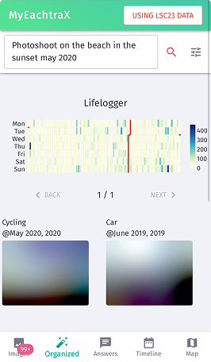
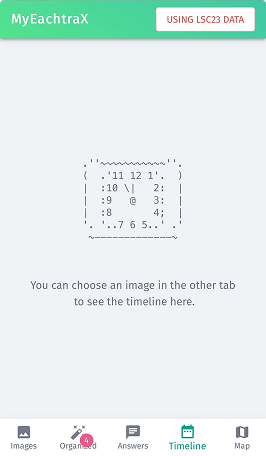
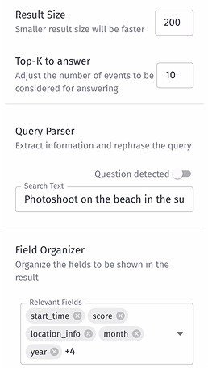
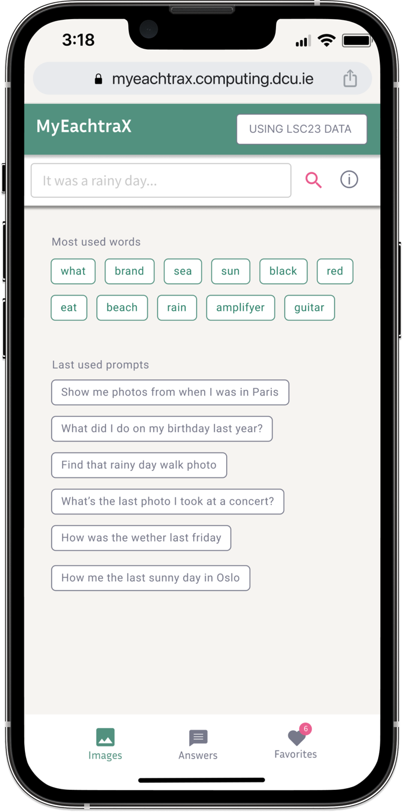
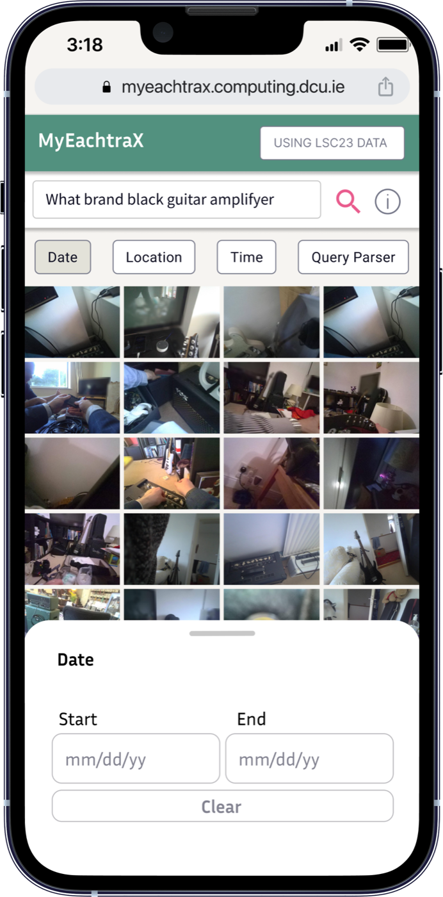
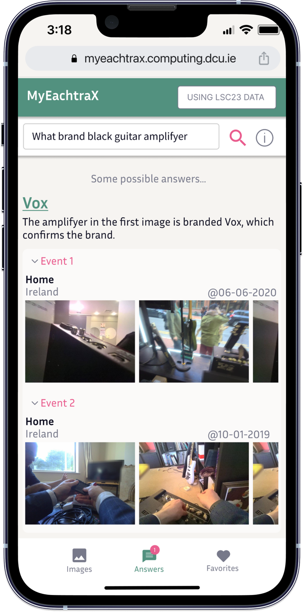
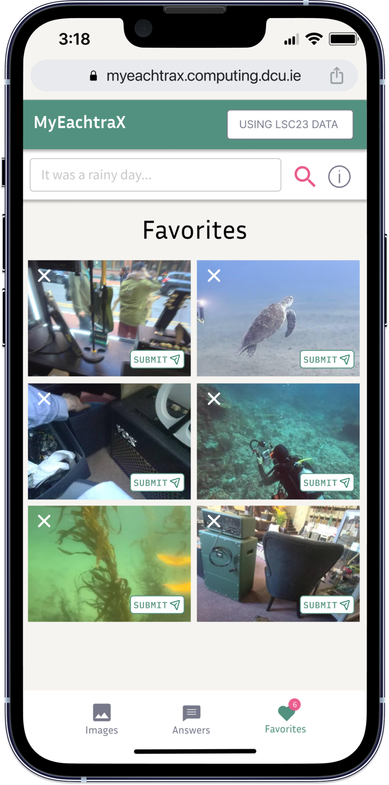

MyEachtraX
MIX204, Universitetet i Bergen
- Min rolle
- UX-designer i prosjektgruppa
- Metoder
- Brukertest, ekspertintervjuer, iterativ prototyping
- Verktøy
- Figma
Beskrivelse
Et redesign av mobilgrensesnittet til MyEachtraX, et søkesystem for lifelogging der man henter fram bilder fra eget liv ut fra tid, sted og hendelser.
Kontekst
Under panseret var MyEachtraX avansert, med språkmodeller og bildesøk som fant riktige bilder raskt. Men grensesnittet gjorde det vanskelig å komme i gang, og brukerne brukte mer tid på å forstå systemet enn på å finne det de lette etter. Oppgaven var å gjøre søket raskere og mer presist bare gjennom design, uten å endre funksjonaliteten.

Utfordringen
Hvordan kan et kraftig søkesystem bli så enkelt at en nybegynner forstår hvordan man starter, søker og finner fram?
Innsikt
Vi startet med å teste det eksisterende systemet og intervjue eksperter som kjente det godt. Tre problemer gikk igjen: bildevisningen var rotete, det fantes ingen måte å filtrere selv, og grensesnittet ga lite veiledning. Automatikken som skulle hjelpe, gjorde det i stedet vanskelig å forstå hvorfor resultatene ble som de ble.



Prosess
Forbedre det som fantes
Vi valgte å iterere på det eksisterende grensesnittet i stedet for å starte fra bunnen av. Brukerne skulle kjenne igjen systemet, og innsatsen skulle gå til problemene vi faktisk hadde funnet. Det ga oss to typer endringer: små grep som fjernet friksjon med en gang, som tydeligere farger, større ikoner og ryddigere layout, og noen få større endringer som løste de underliggende problemene, som et helt nytt filtersystem.
Testing med eksperter og nybegynnere
Prototypen i Figma ble testet i flere runder med både eksperter og nybegynnere. Ekspertene pekte på struktur og arbeidsflyt, mens nybegynnerne avslørte detaljene: knappene var for små på mobil, ikonene var uklare og navigasjonen var ikke forutsigbar nok. Hver runde ble tatt inn i neste versjon.
Løsningen
Filtre brukeren styrer selv
En filtermeny for dato, sted og tid ligger alltid rett under søkefeltet. Der systemet tidligere tolket søket automatisk og brukeren ikke skjønte hvorfor resultatene ble som de ble, kan brukeren nå avgrense søket selv. Det gjorde søket mer presist og mer forutsigbart.
Hjelp til å komme i gang
Et tomt søkefelt er vanskelig når man ikke vet hva systemet forstår. Forslag basert på de mest brukte ordene og nylige søk viser hva man kan spørre om, og kan brukes med ett trykk.
Et galleri man kjenner igjen
Bildegalleriet er bygget opp som kamerarullen på telefonen, med zoom og enkel scrolling. Svarene er gruppert etter hendelse med sted og dato, og brukeren kan samle favoritter underveis for å sammenligne før hun velger.




Resultat
I siste testrunde løste alle deltakerne oppgavene raskere enn i den opprinnelige versjonen, og filtersystemet ble trukket fram som den største forbedringen. Flere beskrev grensesnittet som roligere og lettere å stole på.
Hva jeg tar med meg
Prosjektet viste meg hvor mye man kan oppnå ved å forbedre det som finnes i stedet for å starte på nytt. Det viste meg også at automatikk ikke alltid gjør ting enklere. Brukerne ville forstå og styre søket selv, og det var først da de fikk den kontrollen at systemet føltes enkelt.